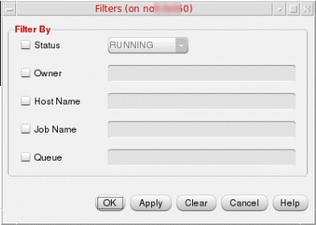

1
Distributed Processing in Virtuoso ADE Explorer and Virtuoso ADE Assembler
This chapter describes how to set up and use distributed processing for job simulation in the Virtuoso.
- Introduction to Distributed Processing
- Preparing the Setup for Distributed Processing of Jobs
- Validating the Distributed Processing Setup
- Submitting Simulation Jobs for Distributed Processing
- Accessing Results of Jobs in Distributed Processing
- Monitoring Jobs in Distributed Processing
- Debugging a Distributed Processing Setup
- Using Environment Variables in Distributed Processing
Introduction to Distributed Processing
Distributed processing is the setup used for distribution of a program, task, or job across multiple hosts. In such a setup, the multiple hosts work together to complete the task or job.
ADE Explorer and ADE Assembler support a simple distribution system – Load Balancing Software (LBS). It lets you set up queues, which are collections of host machines. You can set up any number of queues and hosts per queue. Each queue has a job-per-host limit. LBS dispatches the submitted jobs to the hosts in the order that you specify.
Distributed processing is supported by the Spectre simulator, as well as the simulators that are integrated using OASIS.
See Preparing the Setup for Distributed Processing of Jobs for more information.
Supported DRMS in Distributed Processing
By default, LBS uses the Cadence Queue Manager (cdsqmgr) for distributed processing of jobs. In addition, it provides a built-in hook into the following third-party Distributed Resource Management System (DRMS) tools that support distributed processing of jobs:
The LBS software consists of both an LBS client library and an LBS server program. The LBS client library is used by Cadence applications to interact with the LBS server process. This server process uses the client library provided by the DRMS to interact with the DRMS cluster. Therefore, the LBS server process is considered an DRMS client application.
Preparing the Setup for Distributed Processing of Jobs
This section contains information that system administrators need to configure LBS and the distributed processing clusters. To use distributed processing successfully, ensure that your setup follows the requirements described in the following sub-sections:
- Common Setup Requirements
- System Requirements for cdsqmgr Setup
- System Requirements for LSF Setup
- System Requirements for OLV Setup
- Resource Requirement String Format
- System Requirements for SGE Setup
- Other Requirements
Common Setup Requirements
You must ensure that your site meets the following list of basic requirements or assumptions so that the distributed processing software works smoothly:
-
To submit a job, you must have an account and a home directory on the submission host and the execution host.
Example: If a usermorrisonwho submits a job frommachine Atomachine Bdoes not have an account onmachine B, the submit request formorrisonfails. - You must have access to the OS specific Cadence® software on every execution host that might receive a job from you.
-
The directory on your local machine from which you run the distributed processing software must be exported if you are using the
v/net,/home, or/hm. Network mode also assumes that your working directory, and all your design data are under your account and are mirrored. Whenever the remote job references a path, that path goes directly back to the original directory on your home machine. -
The
uid(UNIX user ID) of a user must not change when the user switches from one machine to another. For example,uidof8819must not identify usermorrisononmachine Aand userdoeonmachine B. -
To submit jobs, all users must have write-access to the
/tmpfile system on the execution and submission hosts. The job submission and execution processes create certain temporary files that are saved in the/tmpfile system. -
The setup considers that all files – input, output, error, and any command or OCEAN files – have absolute or relative locations, depending on whether they are preceded by a
/. All relative locations are searched relative to the working directory of the job. Ensure that you specify the correct path for all files. -
The directory structure on the home machine and the remote machine must be identical. For example, if the working directory of the job on your machine is
/net/salmon/u1/morrison, the design directory on the execution machine must be/net/coho/u1/morrison. If the directory structure does not match onsalmonandcoho, use a link to mirror the directory structure on the home machine.
Defining Variables for Distributed Processing
The LBS distribution software supports the cdsqmgr, LSF, OLV, and SGE DRMS. To distribute and process jobs, you need to set the environment variables based on the DRMS that you use on your local system.
You must define the following variables for each distributed processing client machine:
The variable values that you specify differ based on whether you use LBS, or LBS with third-party DRMS. However, ensure that you set the appropriate variables based on the DRMS that you use. If you specify none of these variables, you can use distributed processing only in the command-line mode.
System Requirements for cdsqmgr Setup
LBS cdsqmgr is a Cadence load balancing software that helps you set up a simple distributed system for multiple users based on the config file that you specify. It helps to run distributed processing jobs in queue mode.
Using LBS with cdsqmgr, you can set up any number of queues (collections of host machines) and hosts per queue. Each queue has a job-per-host limit. LBS cdsqmgr dispatches jobs to the hosts in the order that you specify.
Distributed processing using LBS cdsqmgr is supported by the Cadence analog simulator Spectre, APS, XPS, and mixed-signal simulator AMS.
Setting up a site for an LBS system with cdsqmgr involves the following steps:
Using cdsqmgr with remote shell (rsh)
To set up distributed processing with LBS cdsqmgr, ensure that you have the required system administrator rights or root permissions, and do the following:
- Create the config file.
- Check the host requirements. Ensure the following:
- Start the daemon process.
- Set up the UNIX environment for distributed processing users.
- Run the configuration testing script.
rsh to communicate between the hosts. Therefore, no additional settings are required to run rsh.Creating the Config File
Cluster configuration files can have any name and reside in any location. This file contains names of queues, machines in queues, number of hosts in a queue, names of hosts in a queue, and the job limit of individual hosts. The syntax for these files is as follows:
queue_1_name N_-_number_of_hosts_in_queue_1
host_1 job_limit_for_host_1_on_queue_1
host_2 job_limit_for_host_2_on_queue_1
...
host_N job_limit_for_host_N_on_queue_1
queue_2_name N_-_number_of_hosts_in_queue_2
host_1 job_limit_for_host_1_on_queue_2
host_2 job_limit_for_host_2_on_queue_2
...
host_N job_limit_for_host_N_on_queue_2
...
queue_n_name N_-_number_of_hosts_in_queue_n
host_1 job_limit_for_host_1_on_queue_n
host_2 job_limit_for_host_2_on_queue_n
...
host_N job_limit_for_host_N_on_queue_n
For example, the contents of a sample configuration file lbs.config are as follows:
************************ lbs.config ***************************
queueA 2
noi-user1 3
noi-user2 2
queueB 3
noi-user1 4
noi-user2 2
noi-user3 3
****************************************************************
Place this file in your $HOME.
In the above configuration file, queueA and queueB are the names of two queues. The first statement queueA 2 indicates that the queue queueA has two hosts. These hosts are noi-user1 and noi-user2. The statement noi-user1 3 indicates that the host noi-user1 can handle a maximum of 3 jobs. Similarly, host noi-user2 can handle a maximum of 2 jobs.
Checking the Host Requirements
-
For LBS
cdsqmgrto work smoothly, you must be able to usershto log in to another host without a password. If you receive a prompt for a password, disable the password. -
Ensure that all host machines can access the Cadence tools. To check if the path to the Cadence tool is available on each host, log in to all the hosts individually and run the following command in the Unix terminal window:
> which spectre > which virtuoso
-
Use
rloginto log in to each host and check if the host passes thecheckSysConftest. The following command ensures that the machine has all the required patches for running the tool.
For example, if you are running Virtuoso IC6.1.8, use the following command:<ic_install_path>/tools/bin/checkSysConf <ic_install_version>/software/IC6.1.8_ISR4/tools/bin/checkSysConf IC6.1.8
Repeat this test on each host for all Cadence tools (like simulators). For more details, refer to the Cadence article: Running checkSysConf to verify system patch levels. - Ensure that all hosts are connected to a common directory structure so that the project work area and the simulation directories are visible to each host.
Starting the Daemon
To run cdsqmgr on the identified cluster master, do the following:
-
Identify the cluster master, which is the host on which the
daemonneeds to be run. If the master host isnoi-user1,rloginto hostnoi-user1.> rlogin noi-user1
-
Kill any
cdsqmgrprocess that is already running under the root directory or any other account. Use the following command to find the process:Unix> ps -aef |grep cdsqmgr
Running this command may result in an output as follows:userA 14494 1 0 19:05 ? 00:00:00 /ccstools/cdsind1/Software/IC618ISR_lnx86/tools/bin/32bit/cdsqmgr lbs.config
Here,cdsqmgris already running withPID14494. To kill thisPID, use the following command:> kill 14494
-
Kill any
cdsNameServerprocess that is already running under the root directory or any other account. To do this, use the following commands:Unix> ps -aef |grep cdsNameServer userA 764 1 0 Jul30 ? 00:00:00 /ccstools/cdsind1/Software/IC618ISR_lnx86/tools/bin/32bit/cdsNameServer userA 4181 14330 0 20:47 pts/8 00:00:00 grep cdsNameServer
Here, thecdsNameServeris already running withPID764. To kill thisPID, use the following command:Unix> kill 764
-
Start
cdsqmgras a root user on this master host (noi-user1)by providing the full path to the queue configuration file. The syntax is as follows:cdsqmgr <full_path_to_config_file>/lbs.config
For example:Unix> cdsqmgr /home/user/lbs.config
cdsqmgr from a user account on a cluster master machine, only that user will be able to submit jobs through that cdsqmgr. This is not recommended because jobs of individual users will not be queued together, and as a result, shared resources might not be used optimally.UNIX Environment Setup for Distributed Processing Users
To prepare your UNIX environment for distributed processing, do the following:
- Ensure that your setup meets the common setup requirements. See Common Setup Requirements.
-
Set the following in the
.cshrcfiles for every user environment that intends to run the distributed simulation with LBS:setenv LBS_CLUSTER_MASTER
Here,LBS_master_hostLBS_master_hostis the host on which thecdsqmgrdaemon is running with root permissions. See Starting the Daemon.
For example:Unix> setenv LBS_CLUSTER_MASTER noi-user1
In the above command,noi-user1is set as the cluster master in every user environment.
Configuration Testing Script
To test your setup for some common mistakes, run the adptest script. The script, together with the other Cadence binaries, is available at <ic_install_path>/tools/dfII/bin. To run the script, type the following at the terminal prompt:
adptest
The script displays messages in the same window where you run the script.
>> BEGIN Analog Design Environment Distributed Processing Setup Test Testing for existence of LBS_CLUSTER_MASTER variable... PASSED. Testing opening of Analog Design Environment Job Server... Launching Analog Design Environment job server... Analog Design Environment job server has initialized! PASSED. Please be patient - the remaining portion of the test takes some time. Testing job submission to host `noi-user3' on queue 'queueB'... PASSED. Testing job submission to host 'noi-user2' on queue 'queueB'... PASSED. Testing job submission to host 'noi-user1' on queue 'queueB'... PASSED. Testing job submission to host 'noi-user2' on queue 'queueA'... PASSED. Testing job submission to host 'noi-user1' on queue 'queueA'... PASSED.
END Analog Design Environment Distributed Processing Setup Test
t
<<
Using cdsqmgr with secure shell (ssh)
By default, Virtuoso uses rsh to utilize any distribution processing system. However, several organizations may block rsh and allow only the ssh setup, because of its higher security. You can configure Virtuoso to use ssh for distributed processing.
To configure Virtuoso for using ssh, ensure that you have the required root permissions or administrative rights, and do one of the following:
- Configure Remote Hosts to Accept ssh Connection without a Password
- Edit the cdsRemote.scr File
- Set Virtuoso Environment Variable in the .cdsinit File
Configuring Remote Hosts to Accept ssh Connection without a Password
For Virtuoso distributed system to work with ssh, you need to use ssh to log in to the execution hosts without any password. For example:
shyam@noi-userA$ ssh noi-userB
If you have ssh access on the execution hosts without any password, you immediately get a prompt on that machine as follows:
Last login: Mon Aug 19 17:23:58 2019 from noi-userA.cadence.com
------------------------------------------------------------------
This Cadence-owned computer system and Cadence's computer network are made
available to you for the purpose of conducting authorized company business.
You have no reasonable expectation of privacy with regard to content created,
stored and/or transmitted on this system, except as provided by applicable law.
Cadence may - at any time, for any reason and with or without notice - search,
monitor and inspect this computer and network to the full extent permitted by
applicable law.
==================================================================
/usr/local/rc/cadence.login: No such file or directory.
[userA@noi-userB ~]$
If you do not configure ssh to work without password, the system may give you a message as shown below or may ask for the password.
The authenticity of host 'noi-userB (172.23.65.158)' can't be established.RSA key fingerprint is ac:d9:69:47:10:8d:7f:83:86:53:5f:10:07:e3:20:82.
Are you sure you want to continue connecting (yes/no)?
You need to contact your IT department for creating a setup in which users can use ssh to log in to execution hosts without any password.
Alternatively, create an ssh setup that does not require a password. This method creates a private or public key and registers the execution hosts. Ensure that you have ssh installed on the machines. To create this setup, do the following:
- Create a public or private key.
- Copy the public key file as authorized_keys and add the remote host in the known_hosts list.
- Locate the known_hosts files to validate addition of specified host.
- Add more execution hosts in the known_hosts file.
To create a public or private key, do the following:
-
Run the following Unix command:
unix> cd $HOME/.ssh
-
Run the following Unix command to create a public or private RSA key pair:
unix> ssh-keygen –t rsa
-
Press
Enter. If anid_rsafile already exists, you get a prompt to overwrite the file (Overwrite (y/n)?). Typeyand pressEnterto overwrite the file. -
Press
Enteron the next prompt (Enter passphrase (empty for no passphrase):), to keep the passphrase null:
-
Press
Enteron the next prompt (Enter same passphrase again:), pressEnter.
The following message appears:The preceding procedure generates two files:id_rsaandid_rsa.pubin your~/.sshdirectory.
Adding remote hosts in the known_hosts list
To add the remote hosts in the known_hosts list, copy the id_rsa.pub public key file as authorized_keys. For this, run the following command:
unix> cat id_rsa.pub | ssh userA@noi-userB "mkdir -p ~/.ssh && chmod 700 ~/.ssh && cat >> ~/.ssh/authorized_keys"
You receive a prompt to confirm your connection to the host:
Type yes and press Enter. You are asked for the user password (userA).
After providing the password, the host noi-userB is added into the known_hosts file.
Now, if you use ssh to connect to noi-userB, you will not get any query or prompt for entering a password.
Validating the addition of new hosts
You will now find two more files, authorized_keys and known_hosts that are created in the .ssh directory. Run ll in the directory to find these files.
Open the known_hosts file and validate that the host noi-userB is added.
Adding more hosts in the known_hosts file
Repeat the command in
unix> cat id_rsa.pub | ssh userA@noi-user1 "mkdir -p ~/.ssh && chmod 700 ~/.ssh && cat >> ~/.ssh/authorized_keys"
Open the known_host file. You will find the noi-userB and noi-user1 hosts added to it.
Editing the cdsRemote.scr File
By default, the cdsRemote.scr file, which is available in the $CDSHOME/share/cdssetup/<username>/ directory, specifies the default configuration as follows:
remoteSystem=rsh // Default configuration
#remoteSystem=ssh
To use ssh instead of rsh, make the following changes in the cdsRemote.scr file:
#remoteSystem=rsh // To configure for generic ssh
remoteSystem=ssh
This enables the remoteSystem=ssh switch for the ssh method.
Setting Virtuoso Environment Variable in the .cdsinit File
To use ssh, set the following in your .cdsinit file:
envSetVal("asimenv.distributed" "remoteShell" 'string "ssh")
You can now run distributed LBS with ssh in Virtuoso.
Follow the steps in the “Using cdsqmgr with remote shell (rsh)” section to set up and configure LBS with rsh.
Additional Requirements for LBS
-
Check if
LBS_CLUSTER_MASTERis set. IfLBS_CLUSTER_MASTERis not set, then set this variable appropriately and proceed to the next step. -
Check if
LBS_BASE_SYSTEMis set. IfLBS_BASE_SYSTEMis set, ensure that it is set toLBS_DEFAULT. -
Check if
cdsqmgris running on the machine specified asLBS_CLUSTER_MASTER. Ifcdsqmgris not running, killcdsNameServerand re-runcdsqmgrfrom the root. See Starting the Daemon. -
Ensure that only one copy of
cdsqmgris running from the root account. If multiple copies ofcdsqmgrare running, kill all the copies andcdsNameServer, and reruncdsqmgras root. See Starting the Daemon. -
Check if
cdsNameServeris running onLBS_CLUSTER_MASTER. If it is not running, kill anycdsqmgrthat may be running and reruncdsqmgras root. See Starting the Daemon. -
Ensure that you rerun
cdsqmgrandcdsNameServerwhenever thequeueConfigfile used bycdsqmgris modified. See UNIX Environment Setup for Distributed Processing Users. -
Ensure that all machines specified in the
queueConfigfile are active and do not prompt you to enter the password at login. You can usepingto check if the machines are active. To check password-related issues, typeremsh <any_host_in_queue> pwdin the submission host terminal. -
Take your system administrator’s help to ensure that the timestamp of all the machines specified in
queueConfigfile matches with the machine specified asLBS_CLUSTER_MASTER.
System Requirements for LSF Setup
In addition to the Common Setup Requirements, ensure that the following initial setup requirements are met before you submit jobs to hosts that run the distributed processing option with LSF. The LSF cluster must already be installed and configured as per the LSF installation guide. To troubleshoot any LSF installation issue, contact the LSF system administrator at your site.
Ensure that the LSF server version at your site is compatible with the LSF client version used by the Cadence LSF interface. If the LSF server and client versions (the version of LSF libraries integrated with Cadence LSF daemon) do not match and are not compatible, contact the LSF vendor (Platform Computing, http://www.platform.com) to determine the LSF version compatibility.
- LSF Client Version integrated in Virtuoso Design Framework 5.0 release: LSF 5.1
- Compatible LSF Server Versions: 5.1 and 6.1
You must set the environment variable LBS_BASE_SYSTEM to LBS_LSF in each shell from which you start a Cadence tool to submit jobs.
setenv LBS_BASE_SYSTEM LBS_LSF
Here, LBS_LSF specifies that you want to use the LSF load balancer.
Additional Requirements for LSF
-
Ensure that
LBS_CLUSTER_MASTERis not set. -
Ensure that
cdsqmgris not running. -
Ensure that
LBS_BASE_SYSTEMis set toLBS_LSF. -
Check if
LSFsoftware is installed and running on this machine. Ensure thatsbatchd,lim,pimandresdaemons are running on this machine, and that you can run thelsload,bjobsandbsubpwdcommands without generating any errors. -
Ensure that machines specified in the LSF cluster are active and do not prompt you to enter a password when you log in to these machines. Use
pingto check if the machines are active. To check for password-related issues, typeremsh <any_host_in_queue> pwdin the submission host terminal.
In the LSF setup, the Job Policy Setup form displays a few additional fields as shown in the following figure:
-
LSF Resource String: Lets you specify the additional resource requirements for the job that are not available as separate options in the Job Submit form – for example,
mem(available memory),swp(available swap space),pg(paging rate). You can specify the additional resource requirements using a valid LSF resource requirement string. For more details and examples of LSF resource requirement string, refer to Resource Requirement String Format. - No of Processors: Lets you specify the number of parallel processors that you must use to run the submitted job. To use the value specified in this field, select the check box next to this field.
- License Project Name: Lets you specify the name of the license project. To use the value specified in this field, select the check box next to this field.
- Application Profile Name: Lets you specify the name of an application profile that you must use to run the submitted job. To use the value specified in this field, select the check box next to this field.
- Project Name: Lets you specify the name of a project associated with the job. To use the value specified in this field, select the check box next to this field.
-
User Group lets you assign the submitted jobs to the groups of user.
- Number of Tasks: Lets you specify a numerical value that indicates the number of tasks in which TransNoise jobs needs to be divided for simulation. This option appears if you select the Transient Noise option for the tran analysis in the Choosing Analyses form. To achieve better performance with Transient Noise, specify the values of this field in a way that the number of runs divided by the number of tasks results in a whole integer value.
System Requirements for OLV Setup
In the OLV setup, the Job Policy Setup form displays a few additional fields as shown in the following figure:
-
OLV Resource String: Lets you specify the additional scheduling resource requirements for the job, such as
mem(available memory),swp(available swap space),pg(paging rate) and so on, that are not available as separate options in the Job Policy Setup form. You can specify these additional resource requirements using a valid OLV resource requirement string. For more details and examples of LSF resource requirement string, refer to Resource Requirement String Format.
This property is used by the OLV scheduler to identify an appropriate execution host for the job. To use the value specified in this field, select the check box next to this field. Alternatively, specify the additional scheduling resource requirements value by using the olvResourceString environment variable. -
No Of Processors: Lets you specify the number of processors that you must use to run the submitted job. To use the value specified in this field, select the check box given next to this field. Alternatively, you can specify the number of processors by using the olvNoOfProcessors environment variable.
This option is reasonably portable when the CPUs or cores are consumed by multiple threads in a single process. When multiple processes are used on one or more hosts, different DRMSs have different launch requirements. - Project Name: Lets you specify the name of a project associated with the job. To use the value specified in this field, select the check box given next to this field. Alternatively, you can specify the name of a project by using the olvProjectName environment variable.
- User Group: Lets you assign the submitted jobs to the groups of user. The group should not contain any sub-group. To use the value specified in this field, select the check box given next to this field. Alternatively, you can assign the submitted jobs to the groups of user by using the olvUserGroup environment variable.
System Requirements for SGE Setup
In the SGE setup, the Job Policy Setup form displays a few additional fields as shown in the following figure:

- SGE Soft Resources: Specifies requirements for soft resources.
- SGE Hard Resources: Specifies requirements for hard resources.
- SGE Priority: Specifies the priority of the submitted job.
- SGE Parallel Env Name: Specifies the name of a parallel environment.
-
SGE No Of Processors: Specifies the number of processors that you can use. Using this field, you can ensure that the job is run on a machine with sufficient number of CPUs available. You can also reserve these slots to stop many other jobs running on the same machine.
Resource Requirement String Format
LSF and OLV use the resource requirement string to select hosts for remote execution and job execution. For example, you can specify the following resource requirement string in the <DRMS> Resource String field, where <DRMS> stands for LSF or OLV:
select[swp > 50 && mem > 500]rusage[mem=100]
This resource requirement string runs a job only on a host that has 50 MB or more of available swap space and 500 MB or more of available memory, and also reserves 100 MB memory for the job.
The resource requirement string can have the following sections:
-
Selection section (
select) – Specifies the criteria for selecting hosts for a job. -
Ordering section (
order) – Indicates how the hosts that meet the selection criteria must be sorted. -
Resource usage section (
rusage) – Specifies the expected resource consumption of the job. -
Job spanning section (
span) – Indicates if a parallel batch job must span across multiple hosts. -
Same resource section (
same) – Indicates that all processes of a parallel job must run on the same type of host.
See Table 1-1 for examples of each section.
For more information about resource requirement strings in LSF, see the product documentation for LSF at
For more information about resource requirement strings in OLV, see the product documentation for OLV at
-
If the resource requirement string cannot be satisfied, the job will not run and the results are undefined.
For example, if you specifyselect[tmp>100]as the resource requirement string and no machine in the queue has100 MBor more of memory in/tmp, the job will not run and no message will be displayed in the CIW window. -
If you specify a resource requirement string that conflicts with an option that you specify in the Job Policy Setup form, the job does not run and the results are undefined.
For example, if you specify the hosttezas the host to run the job under the Hosts section of the Job Policy Setup form and also select theOnly Use Selected Hostoption and also specify the host name aspvsol7in the LSF Resource String field or in the OLV Resource String field, the job will not be run and the status of the job will be undefined.
Other Requirements
In addition to the common and DRMS-specific requirements, ensure that your system administrator also considers the following:
Time Clock Consideration
All users in a cluster must synchronize the clocks on all computers. Failure to synchronize the clocks can cause errors when you submit jobs. For example, machine Y’s clock reports the time as 11:50, and machine Z’s clock reports the time as 12:00. If a user on machine Y submits a job to machine Z to run ‘Today’ at 11:55, machine Z cannot run the job. The simulation will fail to run on machine Z because the specified run time occurred before the job was submitted.
Network Mode Consideration
To run the distributed processing software, the default mode is the Network Mode. Network mode assumes that your home account is mirrored (linked) on every remote machine on which you might run a job, using commands such as, /net, /home, or /hm. Network mode also assumes that your working directory and all your design data are under your account and are mirrored. Whenever the remote job references a path, that path goes directly back to the original directory on your home machine.
Validating the Distributed Processing Setup
To enable the distributed processing method, you need to specify a significant number of settings. Specifying the correct settings ensures that the setup is valid and appropriate messages are generated.
-
Choose Setup – Job Setup in ADE Explorer, or Options – Job Setup in ADE Assembler.
The Job Policy Setup form appears.
The Job Policy Setup form tests the setup for enabling distributed processing and performs several checks to ensure that the distributed processing environment is set up correctly. The Job Policy Setup ensures the following:
- If the environment variables needed for distributed processing are set properly.
- If the LSF settings are correct, when you select LSF as the distribution method. It also verifies if you have set the path properly and the installed LSF version is supported.
-
If the machines mentioned in the LBS queue are active and
cdsqmgrDRMS is running on the cluster master machine. It also verifies the hierarchy setup for the machines in queue.
The Job Policy Setup performs all the specified checks and displays an appropriate Error or Warning message, if required. If an error occurs, it quits the subsequent checking, but continues to submit jobs with warnings. The Job Policy Setup uses rsh and remsh commands internally for performing the above mentioned checks. Therefore, you must ensure that these commands are run without a password. The Job Policy Setup performs only static checks. It does not submit test jobs to validate the setup.
echo or stty command in your shell setup files because the check utility will not work properly if echo or stty commands exist in your shell setup files.Submitting Simulation Jobs for Distributed Processing
In distributed processing, the order of unused processing capacity of a job determines its assignment to a machine. The job-limit of the job has no impact on this assignment. Hence, when you use a DRMS such as LSF, distributed processing may send jobs to different machines in a different order, as compared to the jobs it sends without LSF.
In distributed processing, you can submit a job from one machine to another. These machines must have access to Cadence software, but they do not need to be in a predefined queue. For example, when you use the distributed processing mode with LSF, both the machines – the machine that you are submitting the job from and the machine running the job – must be in the cluster that has the license to use LSF.
When a job fails using the on of the supported DRMS, all its dependent jobs fail too. Jobs dependent on other jobs that fail are held in the DRMS database indefinitely until you use a DRMS command to force the job to run.
You can submit simulation jobs for distributed processing in one of the following ways:
- Using the ADE Assembler Graphical User Interface
- Using OCEAN
- Using Command-Line Mode
Submitting Distributed Processing Jobs
To use distributed processing in ADE Explorer or ADE Assembler, you need the following:
- Load Balancing Software (LBS) to monitor the activity on the machines that you use for simulations. To know more about a default LBS setup, see System Requirements for cdsqmgr Setup.
- Job Policy Setup form lets you specify the time, the queue, or host for submitting your distributed job.
- Job Monitor form lets you view, suspend, resume, or kill jobs.
Additionally, command-line job submission and monitoring from the UNIX terminal window lets you submit, suspend, resume, monitor, or kill jobs.
You can submit simulation jobs using the Job Policy Setup form in ADE Assembler and ADE Explorer.
- To know more about submitting jobs in ADE Assembler, see Starting a Simulation.
- To know more about submitting jobs in ADE Explorer, see Starting a Simulation.
Submitting Distributed Processing Jobs in OCEAN
This section describes how you can submit a distributed job using the Open Command Environment for Analysis (OCEAN). See the following sections:
- Preparing the OCEAN Environment for Distributed Processing
- Submitting a Job in OCEAN
- Selecting Results by Job Name
- Viewing Results
For more information, see the OCEAN Reference.
Preparing the OCEAN Environment for Distributed Processing
This section describes the basics of setting up OCEAN to use distributed processing. For detailed information on distributed processing commands in OCEAN, see the
To use OCEAN for distributing jobs, you must do the following:
- Start OCEAN.
- Enable distributed processing in OCEAN.
- Disable distributed processing in OCEAN, when required.
Starting OCEAN
To start OCEAN, type the following at the command line of your terminal window:
>> ocean
Enabling Distributed Processing in OCEAN
To enable distributed processing, do one of the following:
-
Type the following at the command line:
>> hostMode( ’distributed )
-
Set the
asimenv.startuphostMode environment variable todistributedin the.cdsenvfile.
Disabling Distributed Processing in OCEAN
To disable distributed processing, type the following at the command line of your terminal window:
>> hostMode( ’local )
Submitting a Job in OCEAN
To submit a job, use the run command, as follows:
>> ocean> run()
The job is submitted, and if the submission is successful, the jobName is returned. After you submit the job, use simJobMonitor to monitor the status of your job.
The terminal window running OCEAN may display the following message:
Job ‘job004’ ran on ’tez’ and completed successfully
This message notifies you about the completion of a job. To turn off display of such messages, set the asimenv.startup showMessages environment variable to nil in your .cdsenv file.
Selecting Results by Job Name
To access results based on the job name, type the following on the OCEAN terminal:
>> openResults( jobName )
This is equivalent to calling openResults with a results directory path.
Example
openResults( ’job001)
The preceeding command opens the results of job001.
Viewing Results
Distributed processing in ADE Explorer or ADE Assembler creates a unique directory structure to contain your results. The results are stored in the following location on the submission host:
simulation/cell_name/simulator/schematic/distributed/job_name/psf
If you are using parametric analysis, the results are saved in the /param directory instead of the /distributed directory. For details, see Accessing Partial Results.
To know more about OCEAN commands for distributed processing, see the OCEAN Reference.
Submitting Distributed Processing Jobs using the Command Mode
The command option is meant for the advanced users who have full understanding of the DRMS (Distributed Resource Management System) commands and their corresponding syntax and options. Ensure that you enter a valid DRMS command to submit the job. The environment does not validate or check the command for errors because it assumes that any DRMS command that you enter is valid.
The command mode supports all DRMSs, especially LSF and SGE, that provide a command-line interface of the type <job_submission_command job_command>.
In general, the following assumptions are made about the command-line interface of the DRMS:
- The DRMS command-line interface accepts a single string as a job command. This string is the last argument of the job submission command.
- The DRMS job submission command is a non-blocking command. This means that the job submission command exits after queuing the job into the DRMS and does not wait for the job to complete.
-
The DRMS job submission command returns the value
0upon successful submission of the job. A non-zero return value indicates an error in job submission.
To use only the DRMS command mode for distributed processing, skip setting the value for LBS_BASE_SYSTEM and LBS_CLUSTER_MASTER.
Accessing Results of Jobs in Distributed Processing
After all the tasks of a job are submitted to the DRMS, the Results Browser shows the path of the results directory for the job.
You can access the Results Browser by choosing Tools – Results Browser in the ADE Assembler or ADE Explorer window. The distributed processing mode creates a unique directory structure to save your results. In the distributed processing mode, results are saved as follows:
Understanding How Results Are Saved
Single Job Simulation
Analysis results of Single Job Simulation are stored in the directory structure as follows:
Mixed-signal Simulation
Analysis results of mixed-signal simulations are stored in a directory structure as follows:
By default, the job directory is selected automatically.
Selecting Results Automatically
The default job directory appears for the current job in the Results Browser. If multiple jobs are running simultaneously, the results directory of the last submitted job is selected as the default. All user operations, such as partial results access, plot outputs, display of output logs, and display of netlist, apply to that job. If one of the multiple jobs submitted is completed, its results directory is selected by default. If all the jobs are completed, the results directory of the last completed job is selected as the default and all user operations are applied to that job.
Each directory has jobs grouped according to the analysis for which they are generated. The table below shows the analysis-to-directory mapping:
Table 1-2 Analysis and Directory Mapping in Distributed Processing
| Analysis | Directory to Select |
|---|---|
Accessing Partial Results
It is possible to access the partial results of a Single Job Analysis. Partial Results access means that you are able to access the results as soon as the job starts running and generating data. You do not need to wait until the job finishes to access the results. This feature is extremely useful if you are running a long simulation, which takes a significant amount of time. After selecting the results, whenever you try to view the results, the data generated until that point in time is displayed. You can view the complete results when the simulation finishes.
Displaying Output Logs for a Simulation
The output logs of a job can be viewed by using Simulation – Output Log in ADE Explorer. To access the output logs in ADE Assembler, right-click an output in the Results tab and choose the contextual menu command Output Log. By default, you can view the output logs or spectre.out files of the job. If you want to view the output logs of any other job, you must manually select the results directory of that job. Running multiple tasks creates multiple spectre.out files. When the tasks finish, the output files are concatenated.
The output file created for a simple simulation is:
<base_dir>/distributed/jobxxx/psf/spectre.out
Displaying the Netlist
To view the netlist file of a simple simulation, choose Simulation – Netlist – Display in ADE Explorer. This typically shows the input.scs files located at <base_dir/distributed/jobxxx/netlist/.
For multi-simulation jobs, multiple input.scs files are created. Typically, these files differ only slightly. The differences between these input.scs files is displayed along with one input.scs in a single window.
Monitoring Jobs in Distributed Processing
The job monitor lets you view the status of submitted jobs. This section describes the basics of using the job monitor.
- Viewing Active Jobs in the Job Monitor
- Saving Configuratons
- Viewing Log Files
- Setting Job Monitor Options
- Setting Filters
- Viewing Job Properties
For more information, see the Cadence® Job Monitor Reference.
Viewing Active Jobs in the Job Monitor
You can view the active jobs using one of the following methods:
-
To open the Job Monitor from the command line, type
cdsJobMonitor &
-
To open the Job Monitor from ADE Assembler or ADE Explorer, choose Tools – Job Monitor.
The Job Monitor window appears.
The queues set up for your use appear in the Queues column of the window. The Jobs list box displays information about the jobs. If no jobs appear in the Jobs list box, click a different queue name.
The Jobs list shows the following information:
- Job Id displays the identification number assigned to a job. The job Id is always displayed and cannot be disabled.
- Job Name displays the name of the job.
- Queue displays the job queue assigned to a job.
- Host Name displays the name of the machine on which the job was launched.
- Submit Time displays the time a job was submitted.
-
Status displays the status of the job. Possible values are:
- FAILED, for jobs that were completed but were not successful. The return code of a non-zero value determines the failure status.
-
SUCCEEDED, for jobs that were completed and were successful. The return code of a
0value determines the success status. - SUSPENDED, for jobs that are suspended.
- RUNNING, for jobs that are running.
- SCHEDULED, for jobs that have been submitted but have not yet started running.
- ABORTED, for running or scheduled jobs that were terminated forcefully. This status also applies to jobs that exceeded their time limit and were terminated by the system.
- Start Time displays the time a job was started.
- Stop Time displays the time a job was stopped.
- Owner displays the user ID of a job’s owner.
Saving Configuratons
To save the current Job Monitor configuration, type the following command in the CIW:
setenv CDS_JOB_MONITOR_DEFAULTS "frame_width=<width> frame_height=<height> frame_x=<x_value> frame_y=<y_value> columns_order=JobID|JobName|Queue|HostName|SubmitTime|Status|Command|Owner show_owner=true show_command=true"
Viewing Log Files
In the Job Monitor window, you can view output or error report log files for a specific job.
- To view the output log file of a job, choose View – Log Files – Output.
- To view the error report of a job, choose View – Log Files – Error.
Setting Job Monitor Options
You can change the display options in the Job Monitor to make the output appear in an order you choose. To change the display options:
-
Choose View – Options.
The Options form appears.
-
In the Refresh Mode group box, specify how often you want the Job Monitor to update the information. Possible values are:
- Manual lets you set the refresh mode to update the display only on demand.
- Auto lets you set the refresh mode to update the display automatically at the specified time. The default refresh rate is 2 seconds. You can move the slider to the right to increase the rate or to the left to decrease the rate.
- Select Show confirmations before terminating jobs. This allows the Job Monitor to display a dialog box to alert you before terminating a job.
-
In the Show Columns group box, select the job attributes to be shown.
Select the checkboxes for the attributes that you want to show. To remove columns from the Job Monitor, deselect the corresponding checkboxes.
Setting Filters
The Job Monitor lets you find jobs that match a set of features that you specify in the Filters form.
-
Choose View – Filters.
The Filters form appears.
 - Click the check boxes next to the attributes that you want to select as the filter criteria.
- Type or select the values you want for each attribute.
-
Click OK.
The Jobs list displays the jobs according to the filters that you specify.
Viewing Job Properties
In the Job Monitor, you can also view properties of a specific job.
To view the properties of a job:
-
Select the job and choose Job – Properties.
The Job Properties form appears.
- Click OK to close the window.
Debugging a Distributed Processing Setup
You can debug your distributed processing setup based on the DRMS that you use.
Debugging LBS with cdsqmgr
In case of errors while running LBS with cdsqmgr, do the following:
-
Check that all the submission hosts and execution hosts pass the
checkSysConftest. IfcheckSysConffails, install the missing OS patches reported. You need to do this check for all IC tools and simulators that you run. -
Check if the
/etc/hostsfile is set up properly. For example: -
Check if
cdsqmgrhas been started from the root. In the Unix terminal, use theps -eafcommand as follows:
ps -eaf | grep cdsqmgr -
Run the following command to check if
LBS_CLUSTER_MASTERis set correctly. It must point to the host on whichcdsqmgris running.
echo $LBS_CLUSTER_MASTER -
5. Check that the
LBS_BASE_SYSTEMvariable is not set in your environment. On typing the following command, your system must returnUndefined variable:
echo $LBS_BASE_SYSTEM - Ensure that the remote hosts can access the path to the design libraries, the project directory, and the path from where you launch Virtuoso.
-
Restart
cdsqmgrif any information in the config file (lbs.config) contains updates, to make the changes effective for all users. For this, kill any runningcdsqmgrandcdsNameServerprocess onhostAand startcdsqmgragain.
Debugging LBS with Third-Party DRMS
You can debug the LBS settings based on the third-party DRMS that you choose for distributed processing of yours jobs.
Using Environment Variables in Distributed Processing
This section describes the following:
- Specifying Distributed Processing Environment Variables
- Specifying Different Environment Variables for Different Simulators
Specifying Distributed Processing Environment Variables
This section describes the environment variables that control various distributed processing options. Add the variables you want to use in your .cdsenv file.
userDefinedJobName
The default value is nil.By default, DP starts job names with the prefix "job". When specified before a virtuoso run, this variable overrides the default job value in the Job Name field in Job Submit form. This will be effective until you explicitly change the job name in the Job Submit form. You cannot set this variable during a session. This variable is most useful in regression runs with distributed systems and with different job names in each run set through the environment variable.
To set this variable in the .cdsenv file, you should enter the following:
asimenv.distributed userDefinedJobName string "" nil
Example
envSetval "asimenv.distributed" "userDefinedJobName" 'string "sandeep"
copyModeDir
The directory, relative to the execution host, that is set up as the working directory of a copy mode job.
To set this variable in the .cdsenv file, you should enter the following:
asimenv.distributed copyModeDir string "/tmp" nil
hostMode
Makes the distributed processing option the default in the analog circuit design environment.
To set the variiable in the .cdsenv file, you should enter the following:
asimenv.startup hostMode "distributed"
autoJobSubmit
If set to nil, the job submit form is presented to the user at job submit time. If set to t, jobs are submitted automatically.
To set the variable in the .cdsenv file, you should enter the following:
asimenv.distributed autoJobSubmit boolean t
bypassNetlist
If this variable is set to its default value, nil, netlisting is done for all the subtasks of a multitask job before job submission. If it is set to t, netlisting is bypassed for subtasks.
To set the variable in the .cdsenv file, you should enter the following:
asimenv.distributed bypassNetlist boolean nil
lsfResourceString
Specifies the LSF resource requirement string. The resource requirement string is displayed in the LSF Resource String field in the Job Submit form. To use the resource requirement string when submitting a job, select the LSF Resource String check box in the Job Submit form, or add the selectLsfResourceString t variable. For more information about resource requirement strings, see System Requirements for LSF Setup.
To set the variable in the .cdsenv file, you should enter the following:
asimenv.distributed lsfResourceString string ""
selectLsfResourceString
If set to nil, the specified LSF resource string is not used when you submit a job, unless you select the LSF Resource String check box in the Job Submit form. If set to t, the specified LSF resource string is used when a job is submitted.
To set the variable in the .cdsenv file, you should enter the following:
asimenv.distributed selectLsfResourceString boolean t
drmsCommand
Specifies the DRMS (Distributed Resource Management System) commands you want to use to submit jobs in the command mode. For example, you can specify bsub commands for LSF or qsub commands for SGE (Sun Grid Engine) for submitting jobs using this environment variable. When this environment variable is set, the command option in the Job Submit form is selected by default and the specified DRMS commands are displayed in the command field. For more information about submitting jobs using the command mode, see Submitting Distributed Processing Jobs using the Command Mode.
To set this variable in the .cdsenv file, you should enter the following:
asimenv.distributed drmsCommand string ""
queueName
Sets the default queue name. If unspecified, the system default specified in your setup file is used.
To set this variable in the .cdsenv file, you should enter the following:
asimenv.distributed queueName string "" nil
queueNameExclusionList
Removes the specified queues from the list of queues available to DP for submitting jobs. For example, if there are four LSF queues named Q1, Q2, Q3, and Q4 and you set the variable to "Q1 Q3", then only Q2 and Q4 will be available to DP for submitting jobs.
To set this variable in the .cdsenv file, you should enter the following:
asimenv.distributed queueNameExclusionList string "" nil
queueNameInclusionList
Makes only the specified queues available to DP for submitting jobs. For example, if there are four LSF queues named Q1, Q2, Q3, and Q4 and you set the variable to "Q1 Q4", then only Q1 and Q4 will be available to DP for submitting jobs.
To set this variable in the .cdsenv file, you should enter the following:
asimenv.distributed queueNameInclusionList string ""
hostName
Sets the default host name. If unspecified, the load balancer automatically selects the host.
To set this variable in the .cdsenv file, you should enter the following:
asimenv.distributed hostName string nil
queueName, hostName, and drmsCommand are specified in the .cdsinit file, then the mode is selected as per the order of precedence –queue, list, and command. This means that if all the environment variables are specified, the queue mode will be selected; if hostName and drmsCommand are specified, the list mode will be used; whereas, if only the drmsCommand is specified, the command mode will be used.remoteShell
Sets rsh as the default remote connection mode and rcp as the default remote copy mode for DP. Specify the value ssh to use ssh as the connection mode and scp as the copy mode for DP. You can also specify the path to any other script or command to be used as the default remote connection mode. If you do this, rcp will be used as the default remote copy mode for DP. You can use the
To set this variable in the .cdsenv file, you should enter the following:
asimenv.distributed remoteShell string “rsh”
Valid Values: rsh, ssh, or the path to any other script or command.
remoteCopy
Allows you specify the path to the command to be used as the default remote copy mode for DP. If this environment variable is not set, the default remote copy mode for DP will depend on the settings for the
To set this variable in the .cdsenv file, you should enter the following:
asimenv.distributed remoteCopy string ""
startTime
Sets 8:00 p.m. as the default start time for a job. If unspecified, the job runs immediately.
To set this variable in the .cdsenv file, you should enter the following:
asimenv.distributed startTime string "20:00" nil
mailTo
Sets the default list of users who will receive an e-mail when the job terminates. If unspecified, no e-mail notification is provided.
To set this variable in the .cdsenv file, you should enter the following:
asimenv.distributed mailTo string "" nil
stateFile
By default, the system creates a file named .adpState in your home directory containing the job server’s state. You can rename the file and put it in a different directory by modifying the statefile string.
To set this variable in the .cdsenv file, you should enter the following:
asimenv.distributed stateFile string "statefile" nil
showMessages
If set to t, a message is displayed in the CIW or OCEAN terminal when a job is completed.
To set this variable in the .cdsenv file, you should enter the following:
asimenv.distributed showMessages boolean t nil
startDay
Sets the default start day for a job. If set to today, the job will always run on the same day it is submitted.
To set this variable in the .cdsenv file, you should enter the following:
asimenv.distributed startDay cyclic "day" nil
Valid Values: today, Sunday, Monday, Tuesday, Wednesday, Thursday, Friday, and Saturday.
expTime
Sets 6:30 a.m. as the default expiration time for the job. If unspecified, expiration time is based on the value of the timeLimit variable.
To set this variable in the .cdsenv file, you should enter the following:
asimenv.distributed expTime string "06:30" nil
expDay
Sets the default expiration day for a job. If set to today, the job always runs on the same day it is submitted.
To set this variable in the .cdsenv file, you should enter the following:
asimenv.distributed expDay cyclic day nil
Valid Values: today, Sunday, Monday, Tuesday, Wednesday, Thursday, Friday, and Saturday.
timeLimit
Sets the default time limit for a job. If set to none, no time limit is imposed. If set to unspecified, the expiration time is based on the value of expTime and expDay variables.
To set this variable in the .cdsenv file, you should enter the following:
asimenv.distributed timeLimit cyclic time nil
Valid Values: unspecified, none, 5 minutes, 15 minutes, 30 minutes, 1 hour, 3 hours, 6 hours, 12 hours, 1 day, 2 days, 3 days, 5 days, and 10 days.
emailNotify
If set to t, e-mail notification is provided following job termination.
To set this variable in the .cdsenv file, you should enter the following:
asimenv.distributed emailNotify boolean t nil
logsInEmail
If set to t, stdout and stderr logs are included in the termination e-mail.
To set this variable in the .cdsenv file, you should enter the following:
asimenv.distributed logsInEmail boolean t nil
daysBeforeExpire
Specifies the number of days after which terminated jobs are deleted from the job server.
To set this variable in the .cdsenv file, you should enter the following:
asimenv.distributed daysBeforeExpire int 3 nil
block
If set to t, analog circuit design environment or OCEAN will be blocked until all the jobs have completed.
To set this variable in the .cdsenv file, you should enter the following:
asimenv.distributed block boolean nil
loginShell
Specifies login shell for the job. If set to none, the user’s local environment is copied over to the execution host and used as the job’s environment.
To set this variable in the .cdsenv file, you should enter the following:
asimenv.distributed loginShell cyclic shell nil
Valid Values: none, csh, ksh, and sh.
puttogetherqueue
Used to specify the queue to be used for Put Together Job.
To set this variable in the .cdsenv file, you should enter the following:
asimenv.distributed puttogetherqueue string "" n
copyNetlist
Used to specify whether the netlist directory needs to be copied from the execution host to the submission host. This may be required during simulation if some files are generated under netlist dir.
To set this variable in the .cdsenv file, you should enter the following:
asimenv.distributed copyNetlist boolean nil
logsDir
Used to specify the directory name where log files of jobs submitted through Distributed Processing are stored. The default value of the variable is "/tmp". There are some specific checks made for the value specified for logsDir, which are as follows:
-
If the value specified starts from "." or "~", it is expanded using
simplifyFilename(). -
If a directory named
logsDirexists, it is used as the log directory for the current job. -
Otherwise, display a message requesting for creation of a directory. If the user response is a No, the job is not submitted. If the user response is a Yes, create a directory as specified in
logsDir:- If the directory is created successfully, use this as logsDir.
-
Else, display a message stating that the directory cannot be created. In this message ask if the user wishes to use "/tmp" as logsDir and then continue. If the response is a
Yes, "/tmp" used as logsDir. If the response is aNo, it stops at this point without any job submission.The value of this variable can be changed from one job to another.
To set this variable in the .cdsenv file, you should enter the following:asimenv.distributed logsDir string "/tmp" nil
mailAllLogs
If set to t, sends out a mail after completion of all the tasks and each individual task.
To set this variable in the .cdsenv file, you should enter the following:asimenv.distributed mailAllLogs boolean nil
logsInPsf
If set to t, stores the stdout/stderr log file in the corresponding psf directory.
To set this variable in the .cdsenv file, you should enter the following:asimenv.distributed logsInPsf boolean nil
shellCmd
Specifies the default value for Shell_Cmd_at_Finish as available in the Job Submit form.
To set this variable in the .cdsenv file, you should enter the following:asimenv.distributed shellCmd string ""
listMode
Specifies whether the list option for specifying hosts needs to be displayed in the Job Submit form. If set to nil, the list option will not be displayed. Therefore, you will only be able to submit jobs from queues.
To set this variable in the .cdsenv file, you should enter the following:asimenv.distributed listMode boolean t
deleteJob
Specifies whether to remove a job and its log files from the DP database after the job is complete. If this variable is set to t, the same job name can be used in successive runs. For example, if you submit a job by the name Job001, the data for this job is generated in the <>/..../job001 directory. When you submit another job after the completion of job001, the same job name can be used in the Job Name field of the Job Submit form and the data for that is generated at the same directory <>/..../job001.
The GUI option corresponding to the deleteJob environment variable is the Reuse Job Name After Completion option on the Job Submit form. To set this variable in the .cdsenv file use the following call:asimenv.distributed deleteJob boolean t
To set this variable in the .cdsinit file or CIW, use the following call:envSetVal("asimenv.distributed" "deleteJob" 'boolean t)
Remote login is required in order to remove the error or log files. You can delete the error or log files without the remote login, by setting the following variable in .cdsenv file:asimenv.distributed deleteWithoutRemLogin boolean t
If set to t, the log files are removed from the NFS mounted path without the remote login.
removeJobData
Specifies whether to remove the results data of a job from the DP database before submitting a new job with the same name. For example, if you submit a job by the name Job001, the data for this job is generated in the <>/..../job001 directory. When you submit another job with the same name, the data for that would be generated at the same location <>/..../job001. However, if the removeJobData variable is set to t, the results of the previous run are deleted before submitting the new job. The GUI option corresponding to the removeJobData environment variables is the Remove Data before job submission option on the Job Submit form.
To set this variable in the .cdsenv file, you should enter the following:asimenv.distributed removeJobData boolean nil
queueName
Specifies name of the queue in which the job is to be submitted. This variable is used in both SGE and LSF modes.
To set this variable in the .cdsenv file, you should enter the following:asimenv.distributed queueName string nil
lsfApplicationProfile
Specifies name of an application profile to be used in LSF mode.
To set this variable in the .cdsenv file, you should enter the following:asimenv.distributed lsfApplicationProfile string
selectLsfApplicationProfile
Specifies if the value specified by lsfApplicationProfile is to be used in LSF mode.
To set this variable in the .cdsenv file, you should enter the following:
asimenv.distributed selectLsfApplicationProfile boolean
lsfNoOfProcessors
Specifies the number of parallel processors to be used in LSF mode.
To set this variable in the .cdsenv file, you should enter the following:
asimenv.distributed lsfNoOfProcessors string "3"
selectLsfNoOfProcessors
Specifies if the value specified by lsfNoOfProcessors is to be used in LSF mode.
To set this variable in the .cdsenv file, you should enter the following:
asimenv.distributed selectLsfNoOfProcessors boolean
sgeNoOfProcessors
Specifies the default number of processors to be used in SGE mode.
To set this variable in the .cdsenv file, you should enter the following:
asimenv.distributed sgeNoOfProcessors string nil
sgeParallelEnvName
Specifies name of the parallel environment in SGE mode.
To set this variable in the .cdsenv file, you should enter the following:
asimenv.distributed sgeParallelEnvName string nil
sgeSoftResources
Specifies the default soft resources to be used in SGE mode.
To set this variable in the .cdsenv file, you should enter the following:
asimenv.distributed sgeSoftResources string nil
sgeHardResources
Specifies the default hard resources to be used in SGE mode.
To set this variable in the .cdsenv file, you should enter the following:
asimenv.distributed sgeHardResources string nil
sgePriority
Specifies the default priority to be set for a job submitted in SGE mode. Default value set to 0.
To set this variable in the .cdsenv file, you should enter the following:
asimenv.distributed sgePriority int nil
olvResourceString
Specifies the default OLV resource requirement string to be displayed in the Job Submit form.
To use the resource requirement string when submitting a job, select the OLV Resource String check box in the Job Submit form, or set the selectOlvResourceString variable to t.
To set the variable in the .cdsenv file, you should enter the following:
asimenv.distributed olvResourceString string "" nil
selectOlvResourceString
If set to t, the OLV resource string specified in the Job Submit form (or specified by the olvResourceString environment variable) is used when a job is submitted. If set to nil, the specified OLV resource string is not used when you submit a job, unless you select the OLV Resource String check box in the Job Submit form.
To set the variable in the .cdsenv file, you should enter the following:
asimenv.distributed selectOlvResourceString boolean nil nil
olvNoOfProcessors
Specifies the number of parallel processors to be used in OLV mode.
To use the specified value when submitting a job, select the check box next to the No Of Processors field in the Job Submit form, or set the selectOlvNoOfProcessors variable to t.
To set this variable in the .cdsenv file, you should enter the following:
asimenv.distributed olvNoOfProcessors string "" nil
selectOlvNoOfProcessors
Specifies if the value specified by olvNoOfProcessors is to be used in OLV mode.
To set this variable in the .cdsenv file, you should enter the following:
asimenv.distributed selectOlvNoOfProcessors boolean nil nil
olvProjectName
Specifies the default OLV project name.
To use the specified value when submitting a job, select the check box next to the Project Name field in the Job Submit form, or set the selectOlvProjectName variable to t.
To set this variable in the .cdsenv file, you should enter the following:
asimenv.distributed olvProjectName string "" nil
selectOlvProjectName
Specifies if the value specified by olvProjectName is to be used in OLV mode.
To set this variable in the .cdsenv file, you should enter the following:
asimenv.distributed selectOlvProjectName boolean nil nil
olvUserGroup
Specifies the default OLV user group.
To use the specified value when submitting a job, select the check box next to the User Group field in the Job Submit form, or set the selectOlvUserGroup variable to t.
To set this variable in the .cdsenv file, you should enter the following:
asimenv.distributed olvUserGroup string "" nil
selectOlvUserGroup
Specifies if the value specified by olvUserGroup is to be used in OLV mode.
To set this variable in the .cdsenv file, you should enter the following:
asimenv.distributed selectOlvUserGroup boolean nil nil
Specifying Different Environment Variables for Different Simulators
Environment variables that you add in your .cdsinit file are applicable to all the simulators that you want to use. To specify environment variables that apply only to specific simulators, define the sessInitTrigFunc function in your .cdsinit file.
After the sessInitTrigFunc function is defined in the .cdsinit file, you can create an entry for this function in the .cdsenv or .cdsinit files to indicate the specified function name.
Consider the following example in which you specify different resource requirement strings for the Spectre simulator and UltraSim simulator.
Add the following in your .cdsinit file:
procedure(CCSsessInitTrigFunc(session) case(asiGetSimName(session)
("spectre"
envSetVal("asimenv.distributed" "lsfResourceString" 'string "lsfStringForSpectre")
)
("UltraSim"
envSetVal("asimenv.distributed" "lsfResourceString" 'string "lsfStringForUltraSim")
)
)
)
-
sessionis the name of the asi session. -
lsfStringForSpectreis the LSF resource requirement string for the Spectre simulator. -
lsfStringForUltraSimis the LSF resource requirement string for the UltraSim simulator.
Set the following environment variables in your .cdsenv and .cdsinit files, indicating the name of the sessInitTrigFunc function to be used:
In the .cdsenv file:asimenv.startup sessInitTrigFunc string "CCSsessInitTrigFunc"
In the .cdsinit file:envSetVal("asimenv.startup" "sessInitTrigFunc" 'string "CCSsessInitTrigFunc")
Troubleshooting FAQs
This section describes how to troubleshoot some of the common difficulties that you can experience while running distributed simulations. See the following problem statements and their corresponding solutions:
- Distributed processing does not work.
- I specify an LSF Resource Requirement String in the Job Policy Setup form and submit a job. The job does not run even after a long time, and I do not see any error message.
- I select LBS as the distribution method on the Job Policy Setup form, and the form expands, but I cannot use distributed processing.
- I start the Job Monitor but it is blank. There are no jobs listed.
- I name a job analysis2 and the system renames it to analysis2001.
- The machine I want to use is not in the host list on the Job Submit form.
- When I click Run, I get a long error message that says that I cannot connect to the LBS queue manager.
- When I run a distributed simulation, I get an error message saying that the job submission failed.
- When I submit a job, it fails and comes back with an error message such as
- I made job B dependent on job A. Job A ran, but job B did not. What is wrong?
- My simulation finished, but I cannot find the PSF results.
- My simulation finished, but I cannot find the PSF results.
- I am using LSF with the distributed processing mode. When I try to run my jobs, I get an error message – “LSF setup is not proper”. I cannot submit any jobs.
- The distributed processing mode randomly quits working. My jobs fail and I get an error message – “Could not connect to the LBS queue manager”. I usually keep a design framework II session running all night.
- I am able to successfully submit distributed processing jobs to all hosts except the cluster master machine, even though it is in one of the cluster’s queues. The job status says: "Job dispatch failed; Cluster master timed out on ACK from execution host".
- I encountered an error message containing a numeric identifier. For example:
- What does this numeric identifier signify?
- How do I specify a queue for a put together job?
- What is the version of LSF that is integrated with the 5.1 release?
- LSF shutdown causes job distribution to freeze?
- When I run a simulation successfully using LSF on Linux, and add new queues, the new queues do not reflect in the Job Policy Setup form.
Distributed processing does not work.
Use the following general troubleshooting tips as one of these could be the reason for the problem in a distributed processing run:
-
Ensure that when you use
rloginfor logging in to remote hosts, you do not receive a password prompt. Authenticate the submission host as a trusted host by usingxhost. Alternatively, create an.rhostsfile in the home directory and ensure that it contains a ‘+’ character. - Ensure that the remote hosts can access the paths to all the model files and the simulation directory.
-
Ensure that the remote hosts can access the Cadence tools hierarchy. To do this, use
rloginfor logging in to the remote host. Run the following command and check if it returns the path to the Cadence hierarchy:unix> which virtuoso
Example of .cshrc content
Adding the following statements in the.cshrcfile selects the appropriate hierarchy for different hosts:if (‘uname’ == "SunOS") then
setenv CDSPATH /net/nas-aus/export/csc/vol2/Software/IC50_sun4v
else if (‘uname’ == "Linux") then
setenv CDSPATH /net/nas-aus/export/csc/vol2/Software/IC50_lnx86
endif
-
Ensure that a user submitting a job has an account and a home directory on the submission host and the execution host.
For example, if a user submits a job from machine A to machine B but does not have an account on machine B, the submit request fails. - Ensure that the directory on your local machine from which you run the distributed processing software is exported.
-
Ensure that the uid (UNIX user ID) of a user does not change as the user switches from one machine to another. For example, if the user
morrisonhas uid8819on machine A, another userdoecannot use uid8819on machine B. -
Ensure that all users who want to submit jobs have write-access to the
/tmpfile system on the execution and submission hosts. The host machines use this file system to save certain temporary files that are created as a result of the submission and execution processes. -
Ensure that the directory structure on the home machine and the remote machine is identical. For example, if the job’s working directory on your machine is
/net/salmon/u1/morrison, the design directory on the execution machine must be/net/coho/u1/morrison. If the directory structure onsalmondoes not match that oncoho, use a link to mirror the directory structure on the home machine. - Ensure that you specify the correct file paths. Distributed processing considers all files – input, output, error, and any command or OCEAN files – to have absolute or relative locations, depending on whether they are preceded by a forward slash (/). If relative, their location is searched relative to the working directory of the job.
I specify an LSF Resource Requirement String in the Job Policy Setup form and submit a job. The job does not run even after a long time, and I do not see any error message.
This can happen if you specify a resource requirement that is not possible to implement or conflicts with an existing option in the Job Policy Setup form. In such a case, run xlsbatch from the UNIX prompt to monitor the status of your job. xlsbatch is a job monitoring tool provided by Platform Computing. To know more details, refer to the LSF documentation.
The status of a job may remain PEND for a long time because of a complication associated with the LSF Resource Requirement String. In the job details of xlsbatch, the PENDING REASON indicates why the job is in a PEND state. You can resolve this by modifying some of the job properties using Job – Manipulate – Modify in xlsbatch.
I select LBS as the distribution method on the Job Policy Setup form, and the form expands, but I cannot use distributed processing.
Distributed processing is available for the Spectre simulator and all the simulators integrated using OASIS. Ensure that you set the appropriate simulator in ADE Explorer or ADE Assembler. See the Command Interface Window (CIW) for error messages or warnings.
I start the Job Monitor but it is blank. There are no jobs listed.
This might be normal. The Job Monitor may not show any job for the following reasons:
- You have not started any jobs yet.
- You started jobs, but a long duration has elapsed and the jobs are finished and consequently terminated.
- The Job Monitor lists jobs by queue, usually in one queue at a time. If you are unsure about the queue that contains your jobs, select ALL under the Queues tab.
I name a job analysis2 and the system renames it to analysis2001.
This indicates that a job analysis2 already exists in the same session. The distributed processing environment automatically appends a three-digit number to any duplicate job names to keep them unique.
The machine I want to use is not in the host list on the Job Submit form.
Contact your system administrator, or cluster master operator, to add the machine to a queue. You can use the list field in the Job Policy Setup form to specify the machine you want to use.
When I click Run, I get a long error message that says that I cannot connect to the LBS queue manager.
Log on to the distributed processing cluster master and list the running processes. Find and kill the cdsqmgr process running under your user name. If you find this process, kill it.
Verify that a cdsqmgr is running under root. If it is not running, contact the cluster operator to restart it.
Exit the Cadence® software on your local host, and then restart it.
You can also get this error when you do not set your environment variables properly. Make sure that LBS_BASE_SYSTEM and LBS_CLUSTER_MASTER are set properly. Also verify that the master host is only in one cluster.
When I run a distributed simulation, I get an error message saying that the job submission failed.
Several situations can cause this error message:
- You do not have an account on the machine to which your job is submitted.
- The specified machine is disconnected from the network or shut down.
- The remote machine does not have access to the Cadence software, especially the distributed processing DRMS. By default, the local setting of the path environment variable should be valid for each execution host.
When I submit a job, it fails and comes back with an error message such as
sh: ./runSpectre not found, spectre not found.
The simulation fails because the remote job cannot find the simulator. You must have a path to the Cadence software on each of the remote machines. By default, distributed processing uses your local environment settings to initialize the session on the remote host. The search path on the remote host will be the same as the path setting on your local host. You must ensure that the path setting on the remote host is relevant, else the simulator will not be found.
For example, on your home machine you have a link to the Cadence software at /u1/users/bill/Cadence. However, your account is at /usr1/mnt3/bill on the machine that you run your job. The remote job goes to /u1/users/bill/Cadence/tools/dfII/bin on the remote machine and finds no account. You must either move the account to /u1/users, to match your home machine, or create a link from /u1/users to /user1/mnt3.
I made job B dependent on job A. Job A ran, but job B did not. What is wrong?
The dependency feature is not based on whether a job runs, but whether the simulation succeeds. If the simulation fails, subsequent dependent jobs will not run.
My simulation finished, but I cannot find the PSF results.
Distributed processing does not store its results in the standard /psf directory. Instead, it creates a /distributed directory at the same level as /psf and /netlist. The /distributed directory contains a directory for each job. This directory contains the /netlist and /psf directory for each job.
For details, see Accessing Results of Jobs in Distributed Processing.
I am using LSF with the distributed processing mode. When I try to run my jobs, I get an error message – “LSF setup is not proper”. I cannot submit any jobs.
When you use LSF, both the machines – the machine you are submitting the job from, and the machine you are submitting the job to – must be in the predefined LSF cluster. The scenario that you describe occurs if your home machine, or the machine that you are submitting from, is not in the LSF machine cluster.
The distributed processing mode randomly quits working. My jobs fail and I get an error message – “Could not connect to the LBS queue manager”. I usually keep a design framework II session running all night.
The most likely reason is that your system administrator is making changes to the job queue. These changes may include changes to the depth or nature of the queue, or to the list of machines included in the queue. Each time the system administrator makes such changes this, they must shut down the Cadence Queue Manager (cdsqmgr). This disrupts any distributed jobs that you have in progress. You must exit your Cadence session and start again.
I am able to successfully submit distributed processing jobs to all hosts except the cluster master machine, even though it is in one of the cluster’s queues. The job status says: "Job dispatch failed; Cluster master timed out on ACK from execution host".
Verify that when the cdsqmgr process starts on the cluster master, your PATH variable contains the path to the bin directory in the Cadence software hierarchy. This means that your PATH variable must contain CDS_INST_DIR/tools/bin).
I encountered an error message containing a numeric identifier. For example:
ERROR (28): There was an error connecting to the distributed job server service. This host may not be set up correctly for using Distributed Processing.
What does this numeric identifier signify?
Each error message in distributed processing is given a unique numeric identifier. You can use this numeric identifier to access extended help (if available) on an error message by typing the following in the CIW:
msgHelp <prodID> <errorID>
|
is the product ID. In case of distributed processing, it is |
|
|
is the error message ID number. This is the numeric identifier that is available in the error message box. |
msgHelp ’DP 28
This displays the extended help for the DP error message, whose message ID is 28.
How do I specify a queue for a put together job?
You can specify a queue for a put together job by specifying an environment variable as follows:
asimenv.distributed puttogetherqueue string "" nil
What is the version of LSF that is integrated with the 5.1 release?
The version of LSF that is integrated with the 5.1 release is 5.1 and 6.1.
LSF shutdown causes job distribution to freeze?
From the same terminal window that is running the workbench, kill the cdsfrb_lsf daemon and restart the workbench to get into distributed processing mode.
When I run a simulation successfully using LSF on Linux, and add new queues, the new queues do not reflect in the Job Policy Setup form.
Ensure that you set the environment variable as, LANG=’C’.
Return to top